Gli anni della Cupola 1417–1436
Table of Contents
- Abstract
- Introduction and General Parameters
- Content of the Edition
- History of the Edition and Project’s Achievements
- Method and Representation of Documents and Texts
- Criticism, Indexing, Commentary
- Data Modelling and Technical Infrastructure
- Interface and Usability
- Metadata, Interlinkage, Access to Basic Data
- Rights and Licences
- Additional Features
- Long Term Use
- Realization of Aims
- Usability, Usefulness, Quality
- Conclusions and Suggestions for Improvement
- Bibliography
- Notes
Abstract
This review critically evaluates Gli anni della cupola 1417–1436, the digital edition aiming to offer unprecedented access to over 1.8 million archival records from the Opera di Santa Maria del Fiore archive, documenting the construction of Brunelleschi’s famous dome of the Florence cathedral, and its civic context. Featuring high-quality reproductions and textual transcriptions of original documents, it facilitates in-depth investigations into topics like workforce management and financial administration, positioning itself as an invaluable tool for scholars and historians. This review assesses the project’s alignment with FAIR principles (Findability, Accessibility, Interoperability, and Reusability) and its effectiveness as a scholarly resource. Recommendations focus on improving data model interoperability and adopting robust preservation strategies to ensure long-term accessibility. By addressing these areas, the review underscores the project’s significance in advancing Digital Humanities and historical research, while proposing enhancements to strengthen its role as a key resource for studying one of history’s most iconic architectural feats.
Introduction and General Parameters
Santa Maria del Fiore, the cathedral of Florence, stands as a testament to the artistic and architectural achievements of the Italian Renaissance. The term complex of Santa Maria del Fiore refers not only to the cathedral itself but also to the adjacent structures that form an integral part of Florence’s religious and civic identity, including the Baptistery of San Giovanni and Giotto’s Bell Tower. At the heart of this ensemble is Filippo Brunelleschi’s1 dome, a hallmark of Renaissance architecture and an engineering marvel of its time. This groundbreaking landmark achievement redefined the possibilities of architectural design in the fifteenth century. Its innovative herringbone brickwork and self-supporting construction not only resolved the structural challenges of spanning such a vast space but also symbolized the intellectual and artistic ambitions of the Renaissance. The Opera di Santa Maria del Fiore – founded in the thirteenth century – is the institution2 historically responsible for overseeing the cathedral’s construction and maintenance. It remains active today, focusing on the preservation, restoration, and documentation of the cathedral and its extensive heritage. Its archive holds a wealth of records that illuminate the administrative, financial, technical and artistic dimensions of the cathedral’s history, offering significant insight into the processes that shaped one of the most celebrated monuments of Western architecture (Ackerman 1966, King 2000).
The project Gli Anni della Cupola 1417–1436 offers an extensive collection of documentary sources from the archive of the Opera di Santa Maria del Fiore. This period is notably significant due to the design and construction of Brunelleschi’s dome. Directed by chief curator Margaret Haines3 and vice curator Gabriella Battista and published by the Max Planck Institute for the History of Science (MPIWG) in Berlin, the project (fig. 1) serves as a comprehensive resource, offering historical documents, critical transcriptions, structured indices, and an image archive of original manuscripts.
Beyond its archival function, the primary mission of Gli Anni della Cupola is to provide scholars, historians, and the general public with accessible and high-quality digital representations of these records. The scholarly objectives include facilitating advanced research, preserving historical materials, and disseminating knowledge related to the construction of Brunelleschi’s dome and the wider historical context of the period. This mission aligns with broader trends in Digital Humanities, which emphasize accessibility, preservation, and interdisciplinary research (Schreibman et al. 2004), ensuring that this invaluable corpus remains a dynamic and enduring resource for historical inquiry.
Gli Anni della Cupola represents a sophisticated integration of a digital archive and a scholarly digital edition. It is presented both as an image archive4 and as “a first, substantial electronic edition of its [Opera di Santa Maria del Fiore’s] historical sources.”5 Beyond serving as a repository – like traditional archives – it incorporates a rich set of annotations, functionalities, and contextual layers that align it more closely with the characteristics of an SDE. This dual approach, which combines archival integrity with in-depth scholarly analysis, highlights its role as a dynamic research resource and reflects the evolving nature of Digital Humanities projects in the digital age (Young 2016, Robinson 2013).
This initiative has brought together numerous contributors in a collaborative
effort. Since the project’s inception, the Institute of Computational Linguistics at the
CNR in Pisa has played a crucial role in providing informatics support, notably through
Eugenio Picchi’s development of the DBT software6, which formed the technical
foundation for the project’s advancement (Haines
2002). A partnership with the Max Planck Institute for the History of Science in
Berlin enabled the final online publication of the project. Financial backing has come
mainly from the Opera di Santa Maria del Fiore, as well as external grants from the Getty
Grant Program, Assessorato della Cultura della Regione Toscana, and the Andrew W. Mellon
Foundation, along with contributions from individuals like John Treacy and Darcy F. Beyer
(Haines 2011). 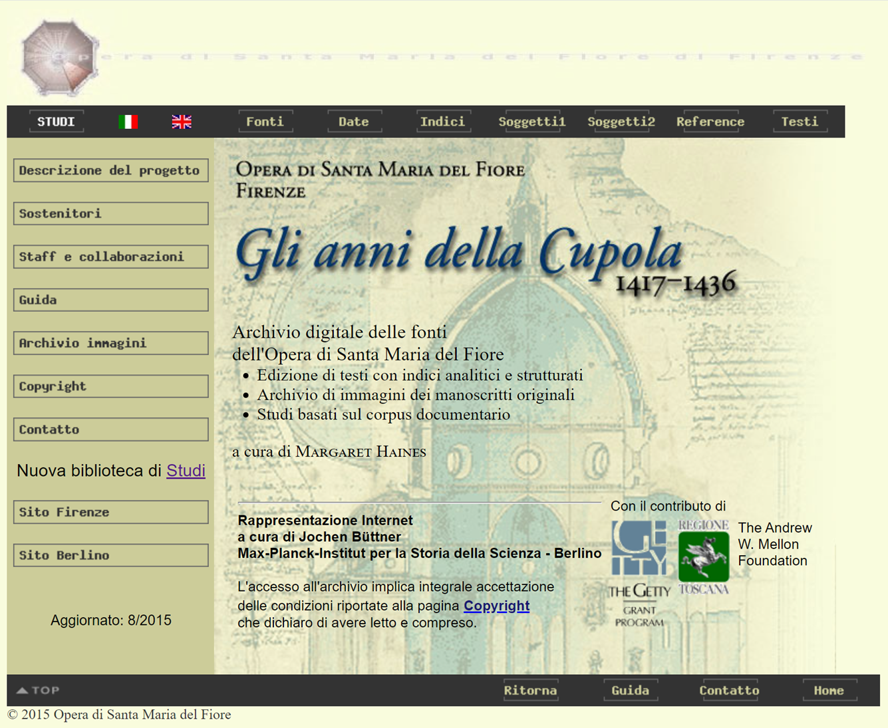
Building on these foundational contributions, the project’s bibliographic information is displayed on the homepage of the SDE website, although no explicit citation suggestion is given for the whole SDE. Detailed information about the editors, collaborators, and responsible institutions is available in the “Staff and Collaborators” section, while information about the project sponsors and financial supporters can be found in the “Sponsor” section.
The first online publication of Gli Anni della Cupola dates back to 2001, when the work-in-progress was initially made accessible on the web. From 2001 to 2012, the project was hosted on a section of the Opera di Santa Maria del Fiore complex’s website. As stated on the “Copyright” page of the edition’s website, the URL was updated in 2013 to its current address: http://archivio.operaduomo.fi.it/cupola/. Additionally, the project can be accessed via the MPIWG servers at http://duomo.mpiwg-berlin.mpg.de.
Content of the Edition
The digital edition provides a diverse array7 of content types, including high-quality images, transcriptions of original texts, indices, scholarly comments, contextual materials, and a comprehensive bibliography. The content is organized into three main branches:
- Textual Archive: This section features over 21,000 fully transcribed documents8 from the Florentine archive, serving as the basic unit of the SDE. To facilitate document retrieval, the project includes richly articulated indices of names, places, and institutions, as well as analyses of content categorized by topics. Terms found in the texts are recorded and grouped into accessible glossaries, and reference tools such as document summaries, hypertext links to related sources, and indices of documentary and chronological references are provided. Although indexing and analysis are carried out in standard modern Italian, they remain faithful to the Latin diction of the original texts, preserving their linguistic and historical richness. The selection of sources and documents for Gli Anni della Cupola follows specific criteria aligned with the project’s goal of illuminating the historical context and construction process of Brunelleschi’s dome. The chosen timeframe, 1417–1436, represents a pivotal period in the cathedral’s history, supported by a relatively abundant body of documentation. Priority is given to documents that illustrate practical, administrative, and artistic aspects of the project, such as materials procurement and logistics, labour management, artistic commissions, financial transactions, and the Opera’s interactions with civic authorities.
- Image Archive: This branch provides high-quality photographic reproductions of the original records, with an internal tool for intelligent viewing of photographs. A more detailed description can be found later in this review, in the “Method and Representation of Documents and Texts” section. Designed to simulate the experience of handling the original manuscripts, these photographic reproductions reconstruct a virtually restored archive, also mitigating the extensive damage caused by the 1966 Florence flood (Haines 2002). It provides a comprehensive consultation experience, granting access to all photographic materials used in the edition.
- Studies Library: This branch functions as a scholarly journal for the SDE, offering an open-access platform for original research. It features interactive HTML and downloadable PDF versions of essays, each equipped with a backlink system that allows users to navigate seamlessly between articles and related archival documents. Through these resources, users can explore the broader implications of the archival materials.
Such a structure enables effective cross-referencing between visual and textual data, enhancing the exploration of topics such as the architectural, social, and economic aspects of the cathedral’s construction and maintenance. To assist users in navigating this extensive collection, the website’s left side navigation bar features a “Project description” section, detailing the nature and development of the project, and a “Guide to consultation” section, outlining the general organization of the content and providing instructions on how to use the digital resources effectively. However, even with these navigational aids, new users may still face challenges navigating the site, particularly if they lack prior knowledge of the project’s scope and content. This issue is discussed at greater length in the “Interface and Usability” section below.
While the digital edition offers extensive coverage, some relevant content is currently missing. Notably, documents related to the Opera di Santa Maria del Fiore from the archival collection of its parent institution, Arte della Lana, have not yet been included. Given that Arte della Lana played a crucial role in the governance and financial oversight of the Opera – such as electing its members, managing budgets, and making decisions on sensitive matters – integrating these documents would provide a more comprehensive view of the administration and decision-making processes involved in the Cathedral’s construction (Haines 2002).
The curatorial team acknowledges these omissions in the current corpus and justifies them based on the project’s current focus on documents directly related to the construction and decoration of Brunelleschi’s dome. Documents concerning broader administrative, financial, or legal matters – such as those managed by the Arte della Lana – have not yet been fully integrated, as their relevance extends beyond the immediate scope of the current edition (Haines 2002). There is hope that these additional sources will be incorporated in the future, further enhancing the digital edition’s scope and offering a fuller understanding of the institutional and civic dynamics that shaped this monumental architectural project.
History of the Edition and Project’s Achievements
This project is deeply rooted in a long tradition of scholarly editions, reflecting over a century of archival work related to the Opera di Santa Maria del Fiore. The printed tradition began with the work of Cesare Guasti, particularly through the two anthologies he edited, which focused on the dome (Guasti 1857) and the construction of the cathedral and bell tower (Guasti 1887). These anthologies form part of a larger project aimed at documenting the history of the documents related to the Cathedral of Santa Maria del Fiore, encompassing both the artistic monuments and the administrative history of the Opera factory, managed by Arte della Lana. The legacy of this ambitious work has continued through the 20th century, with scholars such as Giovanni Poggi and Ugo Procacci paving the way for Margaret Haines and the current digital edition (see also Saalman 1980, Haines 2002, Giacomelli and Settesoldi 1993).
The project’s modern phase began in 1994, as part of the initiatives marking the seventh centenary of the cathedral’s foundation. Gli anni della Cupola was conceived as a pilot project for a digital edition of the Opera’s archival sources, featuring a structured system of indexes designed for guided research. This early phase was developed in collaboration with Eugenio Picchi, the creator of the DBT (Textual Database) system, at the Institute of Computational Linguistics in Pisa, with advice from Umberto Parrini of the Center for Computer Science Research in Cultural Heritage at the Scuola Normale of Pisa. This partnership successfully combined DBT’s textual management capabilities with a newly designed logical structure for data access, creating an immediate and integrated database. The results of this pilot phase were presented to the public in 1997 (Haines 2002).
Following this pilot experience, the Opera di Santa Maria del Fiore decided to support the project’s continuation for the period 1417–1436. The initial goal was to create a textual database accessible at the Opera Archive and to produce a CD edition upon project completion. However, with the advent of the Internet, the project evolved significantly (Haines 2002).
As highlighted in the “Project description” section of the SDE website, the Internet era led to a fruitful collaboration with the Max Planck Institute for the History of Science in Berlin. This partnership has been guided by Jürgen Renn, the director of Berlin Institute, and Peter Damerow, a renowned philosopher, mathematician, and educational researcher. Between 1999 and 2000, science historian Jochen Büttner and programmer Bernd Wischnewski undertook the task of transforming ASCII archive files into the SGML-XML format, aiming to ensure the long-term stability and online accessibility of the data. To facilitate online dissemination, the Max Planck Institute employed cost-effective memory expansion to develop extensive HTML pages, compatible with all Internet browsers. Between 2000 and early 2001, Büttner, in close collaboration with the Florence editorial team, created a static yet functional HTML representation of the edition. The HTML interface presents options as lists, menus, and glossaries, guiding researchers through the archive’s content. In 2001, the project’s initial Web-release featured approximately 5,000 documents, hosted on both the Opera del Duomo’s and the Berlin Institute’s servers. The digital edition has since undergone numerous revisions, with a major relaunch and last update in 2015.
Integrating photographic reproductions initially presented challenges due to technical limitations and maintenance issues. The editors did not plan to include photographic reproductions of the original manuscripts, given the constraints of early computing and the legibility issues faced by many codices, exacerbated by severe damage from the flood that inundated Florence in 1966. However, solutions for photographic integration were developed over time (Haines 2002):
- 1958 microfilms: Black-and-white microfilms of 19 out of 31 codices were found in the archive and digitized. According to the subpage “Information about the image” on the SDE website, in 1996, the Perugia-based PDS company scanned the microfilm, while the Parallelo company in Florence processed the images by cropping and separating them into 1,634 individual files. The Opera archive’s staff utilized printouts from these reels to supplement visual examination, employing ultraviolet lamps to enhance the readability of the most faded passages.
- Collaboration with Fachhochschule of Cologne in 1999: The team from the Fachhochschule Department of Conservation of Manuscripts used advanced image processing and experimental techniques inspired by police applications to photograph and virtually restore damaged codices that lacked previous photographic documentation. Concurrently, the existing microfilms were digitized and reformatted for easier consultation.
The integration of these photographic solutions has greatly enhanced the project’s accountability and comprehensiveness, enabling high-quality representations of the archival documents for researchers and scholars. High-quality photographic images of the manuscripts’ folios are hosted on Digilib (Digital Document Library), a platform developed through the ECHO (European Cultural Heritage Online) initiative after 2002. Spearheaded by the MIPWG under the direction of Robert Casties, in collaboration with Universität Bern and other institutions within the Humanities section of the Max Planck Society, the software was initially registered as open source on BerliOS in 2002. Originally designed for the Archimedes project, Digilib enabled the presentation of digitized images and transcriptions of historical texts. Over time, this tool has been adopted by numerous projects within the Max Planck Society, continuing to play a pivotal role in the presentation of digitized images and other materials, making a significant contribution to the Digital Humanities field (Schraut 2008).
Method and Representation of Documents and Texts
As a result of the sustained efforts of all the project’s collaborators, the digital edition features a vast textual archive enriched with high-resolution images of manuscript folios and their corresponding critical transcriptions. At the core of the SDE’s methodology is the treatment of each document as a unique primary source. This approach reflects a commitment to a philological and document-centric editorial approach, emphasizing the physical characteristics and historical context of each document and avoiding any abstraction or idealized version of the text. Detailed instructions on functionalities, search methods, and the edition’s philological aspects are available in the “Guide” section in the vertical navigation bar.
The fundamental unit of the digital scholarly edition is the document entry page (fig. 2). It is organized into two main sections:
- Essential metadata and textual transcription: This section includes metadata identification of the record – such as identification code, date, summary, title, archival physical collocation –, a detailed transcription of the original text, and editorial annotations.
- Analysis of the document: This section features indices of names, roles, places, institutions, indexed topics, and documentary and chronological references, including hypertext links between related documents, citations within the documents, and a bibliography of previous editions of the texts.
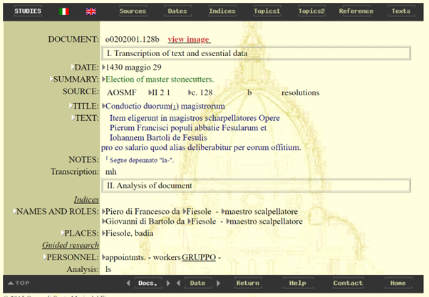
The SDE follows a diplomatic approach in its transcriptions, prioritizing fidelity to the original manuscripts by closely replicating the text’s physical and linguistic features. As defined by Pierazzo, a diplomatic edition “reproduces as many of the characteristics of the original document as the medium permits or as the project requires” (2011). In line with this principle, the SDE’s transcriptions preserve original spellings, punctuation, and abbreviations, even if they deviate from contemporary norms. The textual layout, including line breaks and marginalia, is also carefully reproduced, and editorial notes provide additional context on variations and amendments without altering the original text itself. Transcriptions are based on single witnesses, ensuring a precise and trustworthy representation of the source material.
For instance, by considering the record with the ID “o0201086.049b”9
(fig. 3) it can be observed that the digital
text closely mirrors the source document. It preserves specificities such as the
abbreviation Nobiles viri10, followed by a list
of noblemen’s names, each denoted with their full titles and family associations – e.g.,
Gualterius Iohannis de Biliottis, Tomasius Bartolomei de
Barbadoris, and others. The transcription also retains Latin conjunctions and
phrase structures, such as utiliter peragendis and dato, misso, facto
et celebrato, reflecting the linguistic style and formal qualities of the
original document. The initials in “Transcription” and “Analysis” entries identify the
scholars responsible for the transcription and analysis of the texts, specifically:
Gabriella Battista (gb), Rolf Bagemihl (rb), Margaret Haines (mh), Patrizia Salvadori
(ps), Lucia Sandri (ls).11
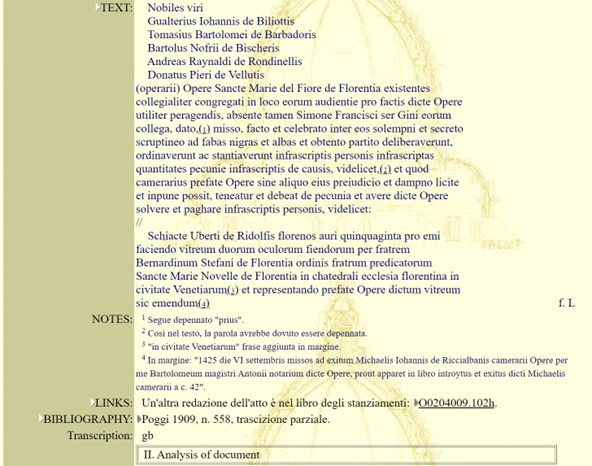
Editorial notes accompanying the transcription further provide insight into marginalia and textual amendments. For instance, note 1 identifies the deletion of the word prius, while note 3 indicates the addition of the phrase in civitate Venetiarum in the margin. These annotations provide essential context, guiding readers through changes made by the scribe or later editors and offering a comprehensive view of both the text’s material and historical dimensions. This method ensures that users have access to an accurate reproduction of the original text, complemented by annotations that illuminate its evolution and the editor’s decisions, thus reflecting the SDE’s dedication to preserving and presenting the manuscript’s historical integrity.
The SDE does not prioritize any manuscript over others; rather, it treats all documents with equal importance, reflecting an egalitarian approach. No attempt is made to create a preferred or authoritative version of the texts. Instead, the focus is on accurately representing the original state and variations of each document.
The role of digital images is pivotal in the SDE. As mentioned earlier, the photographic images of the records are hosted on the external platform Digilib, which provides tools for zooming, scaling, and framing images. Users can access the images in the SDE via the red “view image” button on any document entry page (fig. 4), which opens the digital facsimile (fig. 5) and allows for a comparison of the transcription with the original manuscript. For detailed instructions on using the dual-level viewing and image management environment, users should refer to the “Image Viewing” section in the “Guide” page of the site.
However, users may occasionally encounter broken links to some images within
the SDE. This issue can occur if specific photographic files are unavailable due to
technical errors or if there are discrepancies between the image URLs and the files hosted
on the server. Such broken links can hinder users’ ability to view or compare certain
manuscript folios. Additionally, server-side errors, such as proxy errors12– where the proxy server fails to connect due to input/output issues – can
further restrict access to the digital images and the Digilib platform,
thereby limiting full engagement with the primary sources. 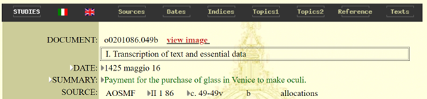 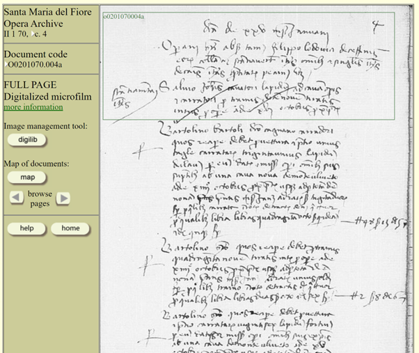
Criticism, Indexing, Commentary
Gli Anni della Cupola adopts a comprehensive approach to textual criticism, combining digital transcriptions, indexing strategies, and editorial annotations to deepen users’ engagement with and understanding of its texts. The project is designed to support rigorous scholarly analysis and research by providing robust tools for navigating and interpreting a vast corpus of historical documents.
The SDE’s indexing strategies provide an intricate and multifaceted approach
to document retrieval, accommodating various research needs by organizing access through
indices of names, places, institutions, and topics. The principal modes of access,
available from the left navigation bar, are organized into two primary
approaches: alphabetical indices of full item strings and alphabetical lists of
single words contained within the items. The alphabetical indices of full
strings include names of people, roles, places, and institutions, allowing users
to explore documents by complete terms, categorized by the original variety found in the
documents, including patronymics and role specifications. These indices maintain the
diversity of names as they appear in the sources, normalized only for spelling. Within
this framework, the SDE indices enable targeted searches based on key components of name
strings – surnames, nicknames, and provenances – offering enriched research possibilities
by isolating these critical elements for direct interrogation. The alphabetical
lists of single words provide access to documents by individual words within the
names, roles, and places categories, such as all terms present in a name, role or place.
For instance, places are arranged hierarchically, descending from the main locality (e.g.,
“Firenze, popolo di San Lorenzo” for the parish of San Lorenzo in Florence), while the
places of origin for persons are indexed under surnames. The indexing of
institutions also follows this model, allowing searches by full institution
names or by single words within those names. Additionally, the SDE employs guided
research for more structured queries across eleven recurring
categories – such as normative dispositions, finances, personnel, destinations,
objects, and materials – each further subdivided to enable nuanced exploration (fig. 6). 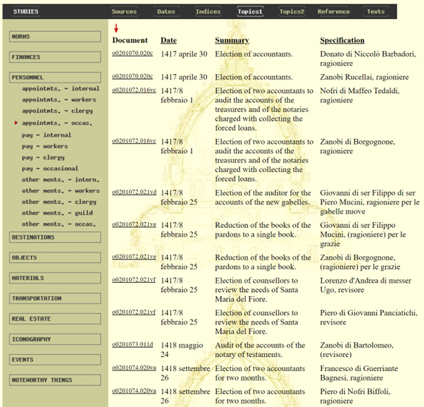
This method provides users with hierarchical paths to browse specific texts based on source terminology, or to perform word searches within these texts for more refined results. The integration of both guided research and word search modes across topics like real estate, iconography, events, transportation, and other noteworthy areas of interest, ensures comprehensive access to the Opera’s records, facilitating detailed scholarly inquiries by leveraging both structured categorizations and diverse research pathways. However, despite these powerful indexing strategies, the absence of a search box in the interface significantly limits the potential for efficient data retrieval. This limitation is addressed in detail in the section “Additional features”.
The inclusion of commentary is another essential feature of the project. The SDE offers critical insights into the nuances of the manuscripts and their interpretations. The commentaries in “Notes” address textual variants, contextualize the documents within their historical frameworks, and provide explanations to help users navigate the complexities of the texts. Meanwhile, the document summaries, or regesti, provide concise descriptions of the documents, enhancing the accessibility and usability of the archive. These summaries are visualized as complete item strings and are arranged alphabetically by the first word, facilitating quick identification and navigation. Composed in Italian, they serve as a tool for the rapid identification of the basic type and content of individual documents, guiding users directly to the original texts for more in-depth analysis. They do not replace the documents but rather complement the indexing system by providing a quick reference that aids in navigating the extensive collection.
Data Modelling and Technical Infrastructure
The digital edition employs a tailored approach to data modeling, opting to deviate from established standards like the TEI (Text Encoding Initiative) Guidelines to better address the specific needs of the project. At the project’s inception in 1994, technical standards such as XML were not yet available, and the decision was made to develop a custom solution, resulting in the creation of the DBT software by Picchi13 (Haines 2002).
However, as the development of the SDE progressed, particularly between 1999 and 2001 when the collaboration with the MPIWG began, the acquired data in ASCII format was converted to XML, and an HTML version was published (Haines 2002). Despite these advancements and a subsequent update in 2015, the project has not integrated with up-to-date best practices. This may be due to the unique challenges posed by managing a large and diverse collection of historical documents, which vary significantly in legibility, preservation state, and format. However, this deviation from standard practices has notable drawbacks. The absence of a formal schema, such as an ODD (One Document Does-it-all) file in TEI, means the data modelling lacks essential formal documentation, hindering transparency and complicating reuse or adaptation by other scholars or projects (Burnard and Bauman 2013).
As a result of these custom decisions, the edition relies on a combination of HTML for display and XML for text encoding, integrated with a database management system for structuring and managing textual data. While this approach provides flexibility to accommodate a wide range of document types, it raises concerns about interoperability and long-term digital preservation. The reliance on proprietary formats and bespoke solutions limits the edition’s potential to integrate with other SDEs, digital archives, and scholarly tools. Additionally, the edition does not follow best practices for image delivery, such as the International Image Interoperability Framework (IIIF), nor does it implement principles for sharing machine-readable, interlinked data on the web.
In contrast, adopting XML/TEI offers a structured, machine-readable markup for textual documents that supports advanced querying, analysis, and cross-referencing. This also facilitates integration with the broader ecosystem of semantic web applications, enhancing data sharing and linking across platforms. Implementing frameworks such as RDF (Resource Description Framework) would allow for the representation of data as a graph, making it easier to integrate information from diverse sources and enabling the creation of linked open data (LOD), which can be shared across different systems. The adoption of LOD standards would ensure long-term sustainability and interoperability by connecting data across various platforms and domains.
Moreover, implementing standards such as IIIF would greatly improve the edition’s image delivery capabilities, supporting high-quality, high-fidelity images, which are crucial for digital archives focused on images. The integration of JSON or JSON-LD would further align the edition with modern linked open data initiatives, providing a lightweight method for structuring data that is compatible with contemporary web technologies and allowing for easier integration with other digital resources.
Interface and Usability
The website’s layout utilizes a combination of header images, navigation
bars, and tables to organize the various sections of the project. This organization
ensures that users can easily access different sections such as “Studies”, “Sources”,
“Dates”, “Indices”, “Topics”, “Reference”, and “Texts”. The interface is designed to be
cohesive, although it relies heavily on older web design practices like table-based
layouts using 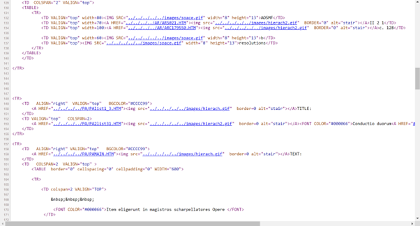<table>, <tr>, and
<td> elements (fig. 7).
Updating the design by adopting modern CSS techniques, such as Flexbox or Grid layouts,
would allow for more flexible and responsive designs, while semantic HTML5 elements like
<header>, <nav>, <main>, and
<footer> would improve accessibility and search engine optimization.
The browsing and search experience on the website could benefit from some improvements. The interface lacks the intuitiveness needed for users to navigate effectively without prior guidance. For instance, the top horizontal bar does not include clear call-to-actions (CTAs), which makes navigation challenging without referring to the “Guide” section. Additionally, the absence of a search bar further complicates the browsing experience, as users may struggle to locate specific content without a thorough understanding of the site’s structure. Another issue is the website’s lack of optimization for various devices, suggesting that responsive design techniques were not prioritized at the time, even though these practices had become widely adopted by the early 2010s in response to the growing need for websites to be compatible with a wider range of screen sizes, including smartphones and tablets. This limitation could be addressed by incorporating responsive design techniques, such as CSS media queries, to ensure the site adapts smoothly to different screen sizes.
Moreover, the project does not integrate with social media or external virtual channels, limiting opportunities for content sharing and discussion. Adding social sharing buttons and integrating APIs from platforms like X would foster user engagement and align the project with contemporary trends in Digital Humanities, where social media is often used for research dissemination and community interaction.14 The absence of such features may be due to the project’s age. Social media integration became more widespread in the mid-2010s, with many platforms offering APIs for sharing and interaction. However, for a project that predates this trend or was last updated before these features became standard, such integrations might not have been considered, particularly if the focus was on the academic and archival aspects rather than on broader community engagement.
The pages of the website are organized systematically, reflecting a
structured archive that documents different facets of the dome over time. The top
navigation bar provides language options between Italian and English, with clickable URLs
that lead to major sections of the archive. However, the use of older HTML attributes,
such as the onMouseOver and onMouseOut event handlers for hover
effects (fig. 8), makes the code less
maintainable. These could be improved by utilizing modern CSS techniques like the
:hover pseudo-class, which allows for cleaner, more maintainable code.
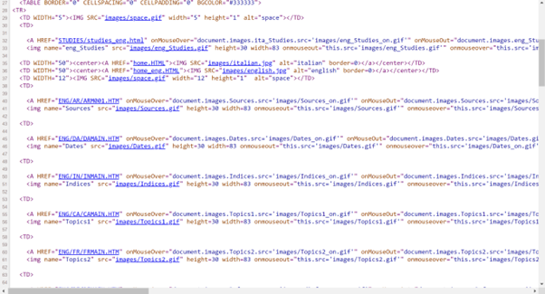
The side navigation panel offers links to project descriptions, supporter information, staff and collaborations, help, the image archive, copyright details, and contact information. The footer section is functional, providing links to navigate back to the top of the page, return to the previous page, access help, contact the project team, and return to the home page. However, the placement of the “Home” link at the bottom of the page can be somewhat inconvenient, especially when the content is lengthy, requiring users to scroll all the way down to access it. For example, a “back to top” button could allow users to navigate easily without scrolling. Additionally, these links still rely on outdated in-line scripting techniques for hover effects, which could be more efficiently handled using CSS to enhance performance, readability, and overall user experience.
Furthermore, the web pages include interactive navigation features that allow users to explore the indexed entries more easily. Arrow icons function as hyperlinks and are embedded within the documents’ entry pages. By clicking these icons, users can seamlessly move between related entries, enhancing the ability to view and understand the connections and details of each record.
Metadata, Interlinkage, Access to Basic Data
The project’s metadata and interlinkage strategies for describing and
connecting the various components of the digital edition demonstrate both strengths and
limitations. Metadata plays a crucial role in cataloguing and organizing digital content,
facilitating discoverability, and enabling connections between related objects within the
digital archive. In this project, metadata about each document – such as the date,
summary, source, text, notes, links, and bibliography – is embedded directly within the
web pages containing record transcriptions. These pages adhere to standard HTML
declarations but rely heavily on nested tables for structuring content. While this method
helps preserve the accuracy of the transcriptions, it creates barriers to user interaction
with the graphical interface, and it deviates from contemporary semantic HTML practices.
For instance, the <head> section of each page includes titles that
reference specific documents – e.g., “II 1 86: 49: o0201086.049b” – which aids in
organizing content within the edition but provides limited opportunities for integration
and interoperability with external digital systems.
A significant limitation, as noted earlier, is the project’s lack of adherence to modern metadata standards and advanced technologies like Linked Open Data (LOD) and the International Image Interoperability Framework (IIIF). This aspect underscores the need for greater methodological transparency and improved data accessibility. Additionally, the project does not offer access to fundamental data formats such as XML or JSON, which would enable users to download, manipulate, or repurpose the data for further research or digital scholarship. Combined with the reliance on outdated HTML and table-based layouts, these shortcomings hinder technical accessibility, interoperability, and scholarly reuse. As suggested above, adopting current web standards could significantly enhance the project’s scholarly impact.
In conclusion, adopting machine-readable metadata standards like Schema.org or Dublin Core would enhance the edition’s discoverability, facilitating seamless integration with other digital collections and fostering broader collaboration within the Digital Humanities community. The absence of formal documentation, retrievable XML encoding or basic data, and compliance with best practices for text encoding, metadata, and image delivery limits its interoperability, reuse, and long-term sustainability. While the edition offers valuable indices and critical transcriptions that support scholarly research, these strengths come at the cost of broader data compatibility. Aligning with established standards is essential to maximizing both the present and future scholarly impact of the edition.
Rights and Licences
Legal considerations, including rights and licenses for the project’s content, are outlined in the “Copyright” section of the website. The materials presented by the Gli Anni della Cupola SDE are owned by the Opera di Santa Maria del Fiore, which grants public access with all rights reserved. As stated on the website: “Users may freely consult the digital archive and reproduce up to 5% of the total text published electronically, solely for the purpose of documenting scholarly publications. Written permission from the Opera di Santa Maria del Fiore is required for any other type of use (commercial, reproduction of images, collections exceeding 5%, etc.).”15 The authorship rights of the edition are attributed to Margaret Haines, and users must seek permission to reuse these materials.
Although the project provides public access to its content, it is not fully open access in the sense of unrestricted reuse. While materials are freely available for research and educational purposes, they are subject to licensing restrictions, and intellectual property rights are retained by the editors and publishers of the SDE. The project is accessible via the web, but any reuse of the content beyond personal consultation requires permission, in line with the established intellectual property statements.
Additional Features
An interesting additional feature of the SDE is the “Studies” section. Configured as an open-access digital library, this section
provides users with original research essays linked to archival acts, enhancing systematic
analysis and suggesting specific case studies. This approach replaces traditional archival
citations in notes with more advanced hypertext links between essays and archival acts.
Accessible via the “STUDIES” label on the website, users can seamlessly navigate between
articles and related documents using a backlink system. As mentioned before, essays are
available in both HTML and PDF formats and users can access the page of each cited record
by simply clicking on the relevant unique alphanumeric code highlighted in blue in the
footer notes (fig. 9). This method streamlines
the consultation process, making it more efficient and user-friendly. Various auxiliary
tools, such as illustrations, graphs, and tables (fig. 10 and 11), are readily
accessible in the HTML version of the essays through the index and links in the main text.
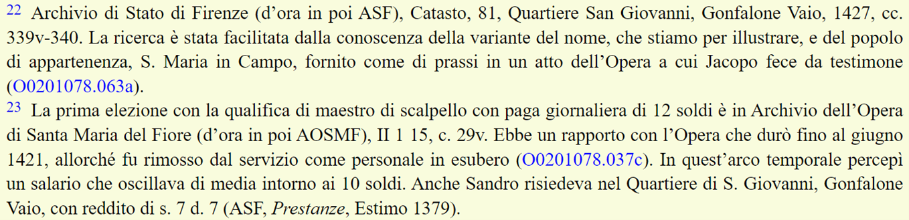 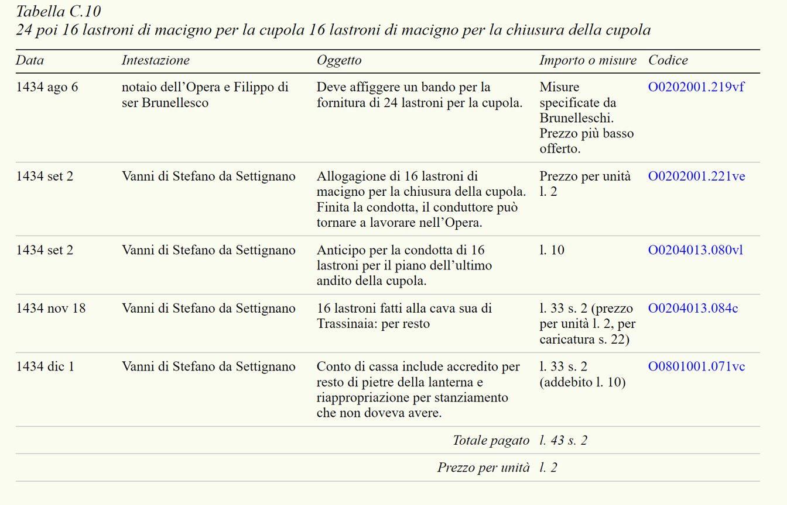 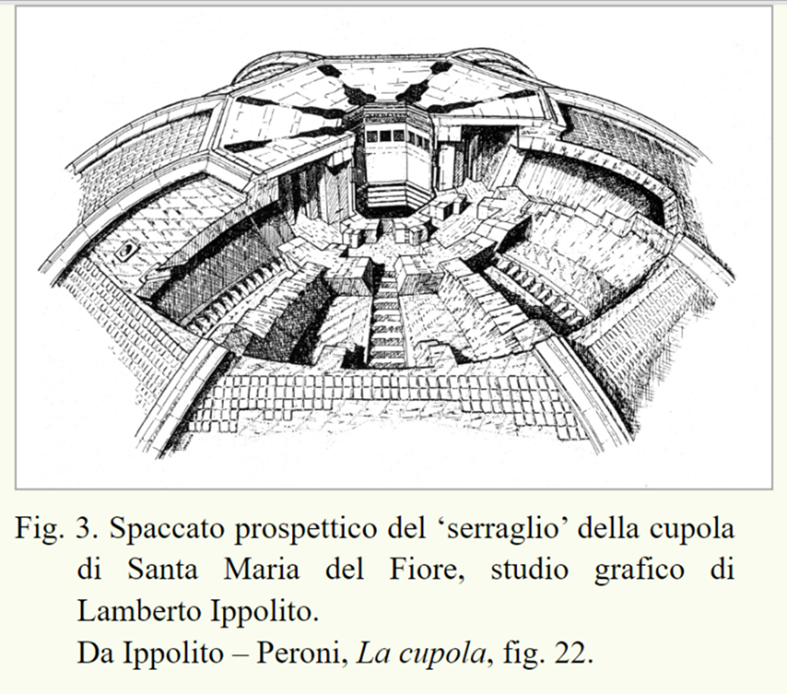
However, it should be noted that most essays available are written in Italian, with no English translations. This language limitation could restrict access for non-Italian speaking scholars and general users, thus potentially limiting the project’s broader impact.
Long Term Use
Ensuring the longevity of digital projects like Gli anni della Cupola requires a proactive approach to managing the lifecycle of both software and hardware components, as digital environments evolve rapidly. Unlike traditional libraries and archives, where physical texts such as printed books and manuscripts can endure for decades or even centuries without requiring significant technological upgrades – though they still need careful conservation and environmental control to prevent deterioration –, digital resources face the constant challenge of obsolescence. While the preservation of physical items involves addressing issues like mold, pests, acid deterioration, and binding decay, these are generally slower and more predictable processes compared to the rapid technological changes that impact digital environments.
In digital preservation, both platforms and the underlying hardware must be regularly updated or replaced to remain functional, creating an ongoing cycle of maintenance driven by the fast pace of technological advancement. This continuous need for renewal results in significant costs for replacing and upgrading software, hardware, and digital storage media. Therefore, digital projects cannot rely on a one-time setup; they require a dynamic strategy for maintenance and management over time. Any sustainable plan for Gli anni della Cupola must account for these factors, including provisions for ongoing technical updates, replacements, and migration to newer technologies to mitigate the risks of digital decay and obsolescence, such as outdated software, data formats, and hardware (Alberti 2001).16
For Gli Anni della Cupola, long-term use hinges on the
collaboration between several key institutions, such as the Max Planck Institute for the
History of Science (MPIWG), the Institute of Computational Linguistics at the CNR in Pisa,
the archive of the Opera di Santa Maria del Fiore and funding supports from Regione
Toscana. These institutions provide a foundation for the project’s curation and
sustainment. Additionally, the sustainability of the project would benefit from a clear
plan for ongoing maintenance and access. The service levels proposed by Oltmanns et al.
(2019 – fig. 12) offer a useful framework for considering the options
available to maintain and provide continuous access to such digital resources. Each level
presents a different approach to sustaining SDEs over the long term, ranging from
Continuous Maintenance, which involves active development to adapt to
changes in user environments, to more foundational levels like Application
Conservation and Bitstream Preservation, which ensure more basic
forms of preservation with varying levels of functionality and accessibility. 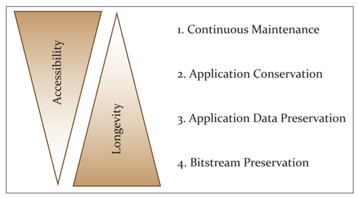
The experience of the Opus Postumum, a critical digital edition of Kant’s work developed by the Berlin-Brandenburgische Akademie der Wissenschaften (BBAW), exemplifies one approach to the long-term use of SDEs, as noted by Oltmanns et al. (2019). This edition uses a server-based system combining an XML database (eXist-db) and a digital image library provided by Digilib, offering robust access controls and optimization for scholarly work. The Opus Postumum has been designed to not only publish project results but also to support continuous editing and scholarly engagement. This approach aligns with the Continuous Maintenance service level, requiring substantial institutional support for ongoing updates and infrastructure management. Such a model would be advantageous for Gli anni della Cupola to ensure that it remains a living digital resource, though it necessitates a commitment to continual investment in infrastructure and technical support.
Conversely, the Edition Visualization Technology (EVT) tool, developed as part of the Digital Vercelli Book project (Rosselli del Turco 2018), adopts a client-only approach that relies on established web standards like HTML5, CSS3, and JavaScript. This setup simplifies the (re)deployment of an SDE across different web servers without requiring additional server-side software, aligning more with the Application Conservation service level (Oltmanns et al. 2019). For projects like Gli anni della Cupola, this model could offer a more pragmatic solution for preserving and presenting the digital edition, ensuring long-term access with less intensive maintenance. However, it may lack some of the advanced functionalities and data management capabilities found in more server-based setups like Opus Postumum.
Given the diversity of these approaches and the potential benefits of each one, it is essential for Gli anni della Cupola to develop a strategic plan that aligns with its goals for long-term usability. This plan should address the need for continuous access to its digital content, whether through more active maintenance or more stable but less flexible preservation methods. Institutional support from its partner organizations will be crucial to achieving sustainable outcomes.
Realization of Aims
Gli Anni della Cupola 1417–1436 successfully qualifies as a documentary SDE, fulfilling its primary objectives of digitizing texts and providing historical insights into the construction of Brunelleschi’s dome. By exceeding the limitations of print technology and offering unique digital functionalities, the project aligns with Patrick Sahle’s criteria for SDEs (Sahle 2016). It provides a critical representation of historic documents, ensuring that the digitized texts are meticulously documented and thus authoritative for academic research. The edition utilizes structured digital tools and technologies to present both photographic facsimiles and transcriptions of the documents, fully embracing the digital paradigm.
The project further distinguishes itself through the use of sophisticated analytical frameworks, such as thorough indexing and detailed commentary, offering a multi-layered approach to text exploration. Users can move seamlessly from viewing a photographic facsimile of a manuscript, to examining its transcription, to engaging with in-depth commentary. This integrated approach overcomes the static nature of print and enables dynamic user interaction with the material. As a result, the project supports advanced philological research, preserves invaluable historical documents, and opens new avenues for scholarly inquiry, making it a comprehensive and valuable digital resource.
Usability, Usefulness, Quality
The SDE Gli Anni della Cupola stands out for its focus on critical scholarship and meticulous documentation, offering users a rich repository of historical documents, critical transcriptions, and facsimiles that support in-depth research and study. Since its inception, the project has steadily contributed to the preservation and accessibility of crucial archival materials. The online interface, which has served the project well over the years, presents the information in a functional, if somewhat traditional, format. Today, there is a clear recognition of the need for adjustments to ensure its continued relevance and usability. As the field of digital textual scholarship evolves, updating the SDE’s navigation and search tools, as well as making the data more flexible for future academic applications, would significantly enhance its usability. While the project has accomplished much, it remains an ongoing endeavor, and further development, along with necessary funding, will ensure it continues to evolve as a valuable resource for researchers and scholars in the future.
Conclusions and Suggestions for Improvement
The following summary outlines the key issues discussed throughout this review. To further enhance the SDE’s scholarly value and improve the user experience, several enhancements are recommended. However, it is important to note that implementing these suggestions would require considerable funding and resources, as they would involve substantial updates to both the technical infrastructure and user interface. These improvements aim to not only refine the functionality of the project but also to ensure its long-term sustainability and accessibility to a wider academic audience.
Revise User Experience (UX)
- Modernize interface design: Update the interface to improve usability and visual appeal by integrating modern web design principles, such as avoiding nested tables in favor of CSS implementations like Flexbox and Grid Layouts. This would enhance the semantic structure and accessibility of the site.
- Simplify navigation structure: Streamline the navigation with a unified top navigation bar with clear, descriptive labels and an integrated search box. This would help users find content more easily without extensive searching.
- Clickable icons and buttons: Replace text links with more engaging buttons and clickable icons to improve the interaction design – e.g., transforming “view image” in the document modules into a button-like item.
- Responsive design: Ensure the website is fully responsive, optimizing it for a range of devices including tablets and smartphones.
Enhance Interoperability and Access to Data
- Implement metadata standards: Facilitate broader data sharing and reuse within the Digital Humanities community. Aligning the data with the TEI (Text Encoding Initiative) Guidelines would involve restructuring the project’s data to coordinate with a widely accepted framework for textual encoding and representation. This integration would introduce a formal schema, enhancing the project’s documentation and transparency, and thereby facilitating easier reuse and adaptation by other researchers and projects. Concurrently, integrating technologies like linked open data (LOD) and the International Image Interoperability Framework (IIIF) would promote seamless data integration, sharing, and reuse across platforms (Snydman et al. 2015). These enhancements would increase the project’s compatibility with other digital archives and research tools, broadening its utility and impact within the Digital Humanities community.
- Provide access to basic data formats: Allow users to download datasets in standard formats like XML or JSON for independent analysis and research. This would enable scholars to manipulate and repurpose data for further digital scholarship.
- Enable multiple outputs: Consider separating the data model (the source) and the publication (the output) into distinct objects, allowing users to toggle between different views – such as reading, critical, and diplomatic editions. This flexibility, inspired by projects like the Jane Austen’s Fiction Manuscripts Digital Edition, would enrich user engagement by providing options to modify outputs dynamically fehlt in der Bibliographie! (Pierazzo 2016).
Improve Search Capabilities
- Integrated search engine: Develop a robust search engine with advanced features such as keywords and faceted search to refine results. This will enhance the discoverability of content by ensuring all documents, images, and texts are thoroughly indexed.
- Semantic tagging and structured data representation: Incorporate semantic tagging for key concepts like time, people, places, and events to enhance search functionality. Leveraging TEI’s rich set of tagging options would enable more detailed encoding of historical and textual features, supporting advanced search and analysis functionalities. Employ structured data representation methods, such as XML/TEI and RDF (Resource Description Framework), to provide richer semantic data and facilitate better interlinkage between objects.
Address Technical Limitations
- Fix broken image URLs: Regularly verify and update Digilib images URLs to ensure they are functional. Ensure that all images are high-resolution and accessible without technical issues, enhancing the visual integrity and usability of the site.
- Expand the “Studies” section: Encourage new scholarly contributions to keep the section dynamic and current.
Integrate with External Platforms and Enhance Collaboration
- Social media integration: Establish profiles on major social media platforms to promote the project and to regularly share updates, findings, and project features, increasing visibility and engagement.
- Dynamic hyperlinking and citation graphs: One notable opportunity for enhancing the Studies Library in Gli Anni della Cupola could be the integration of principles and technologies from the OpenCitations initiative. OpenCitations17 is known for promoting an open, machine-readable citation database that enhances scholarly connectivity. Since the SDE’s journal already provides an open-access platform for original research, adopting an OpenCitations-like approach could improve reference management in several ways. Implementing an RDF schema for references would create a linked network, connecting internal citations to external sources and enriching research context. Embedding DOIs for cited works and using OpenCitations tools to convert citations into linked data formats would allow seamless navigation between the journal’s essays and external academic resources. This integration would enhance user experience by allowing direct access to cited works and related research. Moreover, linked data would improve navigation by allowing users to click on references within the SDE to view related articles and documents, fostering an interconnected scholarly environment. It would also enhance search functionality, helping users locate specific references and explore broader research themes, enriching the backlink system and index in the journal’s HTML and PDF versions. Incorporating OpenCitations principles would thus improve citation management, broaden the research context, and foster a more interconnected scholarly landscape within the Studies Library.
Ensure the Long-term Sustainability and Usability
It is essential to develop a comprehensive strategic plan that aligns with the SDE’s objectives for enduring accessibility and scholarly impact. This plan should integrate active maintenance – such as regular updates, software upgrades, and technological adaptations – with stable preservation methods to safeguard against digital obsolescence. Drawing on models like those employed by the Opus Postumum and the Edition Visualization Technology (EVT) tool can offer valuable insights for enhancing the project’s longevity and usability. The success of this strategy relies heavily on sustained support from key partners, who provide the technical expertise and resources necessary to manage ongoing updates, infrastructure, and curation efforts. By incorporating these elements into a cohesive sustainability framework, the project can remain a dynamic, accessible, and valuable resource for scholars and the public, preserving its significance for future generations.
Gli Anni della Cupola is a documentary digital edition that integrates digital transcriptions, sophisticated indexing strategies, and scholarly commentary to support thorough research and engagement with historical records. By embracing a custom approach to data modelling, this project has tailored its resources to address the unique challenges of historical document preservation, albeit at the cost of broader interoperability and adherence to established standards. The project’s dedication to comprehensive indexing and critical commentary demonstrates a commitment to scholarly rigor, though the reliance on outdated technologies presents hurdles to wider accessibility. Despite these challenges, the inclusion of features like the “Studies” section and the project’s commitment to open access highlight its innovative spirit. These elements not only enhance the usability and depth of the archive of the Opera di Santa Maria del Fiore but also reflect a broader potential for digital projects to contribute meaningfully to research and education. As the field of Digital Humanities advances, Gli Anni della Cupola stands as an inspiring example of how projects can effectively preserve and democratize knowledge, offering a compelling model for future initiatives to build upon its achievements and tackle its challenges.
Bibliography
- Alberti, Maria Alberta, Giliola Barbero and Cesare Pasini. 2001. From parchment to the network: The digitization of manuscript catalogues. Milan: Dipartimento di Scienze dell’Informazione Università degli Studi di Milano.
- Ackerman, James Sloss. 1966. The Architecture of Michelangelo. Chicago: University of Chicago Press.
- Burnard, Lou and Syd Bauman, eds. 2013. TEI P5: Guidelines for Electronic Text Encoding and Interchange. Oxford/Providence/Charlottesville/Nancy: Text Encoding Initiative Consortium.
- Giacomelli, Gabriele, and Enzo Settesoldi. 1993. Gli organi di S. Maria del Fiore di Firenze: Sette secoli di storia dal Trecento al Novecento. Historiae Musicae Cultores 67. Firenze: Olschki.
- Guasti, Cesare. 1857. La Cupola di Santa Maria del Fiore. Firenze: Forni.
- Guasti, Cesare. 1887. Santa Maria del Fiore: La Costruzione della Chiesa e del Campanile Secondo i Documenti Tratti dall’Archivio dell’Opera Secolare e da Quello di Stato. Firenze: Ricci.
- Haines, Margaret. 1989. “Brunelleschi and Bureaucracy: The Tradition of Public Patronage at the Florentine Cathedral.” I Tatti Studies in the Italian Renaissance, 3: 89–125. https://doi.org/10.2307/4603662.
- Haines, Margaret. 2002. “Gli anni della Cupola. Archivio digitale delle fonti dell’Opera di Santa Maria del Fiore.” Reti Medievali Rivista 3 (2). Florence: Firenze University Press.
- Haines, Margaret. 2011. “Myth and Management in the Construction of Brunelleschi’s Cupola.” I Tatti Studies in the Italian Renaissance 14/15: 47–101. The University of Chicago Press. http://www.jstor.org/stable/41781523.
- Haines, Margaret, ed. 2015. Gli anni della cupola 1417–1436 [Archivio digitale delle fonti dell’Opera di Santa Maria del Fiore]. Accessed March 11, 2025. Opera del Duomo Florence archive servers: http://archivio.operaduomo.fi.it/cupola/home.HTML. MPIWG servers: http://duomo.mpiwg-berlin.mpg.de/.
- King, Ross. 2000. Brunelleschi’s Dome: How a Renaissance Genius Reinvented Architecture. USA: Penguin Books.
- Oltmanns, Elias, Tim Hasler, Wolfgang Peters-Kottig, and Heinz-Günter Kuper. 2019. “Different preservation levels: The case of scholarly digital editions.” Data Science Journal 18 (51), 1–9. https://doi.org/10.5334/dsj-2019-051.
- Pierazzo, Elena. 2011. “A rationale of digital documentary editions.” Literary and Linguistic Computing 26 (4): 463–477. https://doi.org/10.1093/llc/fqr033.
- Rehberg, Andreas. 2006. “‘Nobiles’, ‘milites’ e ‘cavallerocti’ nel tardo Duecento e nel trecento.” In La nobiltà romana nel Medioevo, edited by Sandro Carocci, 1–52. Rome: École Française de Rome.
- Robinson, Peter. 2013. “The Concept of the Work in the Digital Age.” Ecdotica 10, edited by Bárbara Bordalejo, 13–41. Bologna: Università di Bologna. https://web.archive.org/web/20250426135051/https://site.unibo.it/ecdotica/it/numeri-della-rivista/ecdotica-10-2013/ecdotica-10-2013.pdf/@@download/file/Ecdotica%2010%20(2013).pdf.
- Rosselli del Turco, Roberto. 2018. The Digital Vercelli Book. Accessed March 11, 2025. http://vbd.humnet.unipi.it/beta/index.html#104v.
- Saalman, Howard. 1980. Filippo Brunelleschi: The Cupola of Santa Maria del Fiore. London: A. Zwemmer.
- Sahle, Patrick. 2016. “What is a scholarly digital edition?” In Digital Scholarly Editing: Theories and Practices, edited by Matthew James Driscoll and Elena Pierazzo, 19–40. Cambridge, UK: Open Book Publishers.
- Schraut, Tobias. 2008. “Special Interest Group ‘digilib’ – an overview.” Presentation at eSciDoc Days, Berlin. Accessed May 16, 2025. https://pure.mpg.de/rest/items/item_1759464_1/component/file_1759463/content?download=true.
- Schreibman, Susan, Ray Siemens, and John Unsworth, eds. 2004. A Companion to Digital Humanities. Oxford: Blackwell Publishing.
- Snydman, Stuart, Robert Sanderson, and Tom Cramer. 2015. “The International Image Interoperability Framework (IIIF): A Community & Technology Approach for Web-Based Images.” Innovative Software, Projects, and Services 12. https://doi.org/10.2352/issn.2168-3204.2015.12.1.art00005.
- Vasari, Giorgio. 2001. Le vite de’ più eccellenti architetti, pittori, et scultori italiani, da Cimabue insino a’ tempi nostri. Edizione per i tipi di Lorenzo Torrentino, Firenze, 1550. Turin: Einaudi.
- Young, John. 2016. “The Scholarly Edition and the Digital Critical Archive: Interaction, Collaboration, Community, and Adaptive Revision.” Committee on Scholarly Editions (blog), July 26, 2016. https://web.archive.org/web/20250411115306/https://scholarlyeditions.mla.hcommons.org/the-scholarly-edition-and-the-digital-critical-archive-interaction-collaboration-community-and-adaptive-revision/.
Notes
- Filippo Brunelleschi was a pioneering figure in the development of Renaissance architecture and engineering. His most celebrated accomplishment, the dome of Santa Maria del Fiore cathedral, exemplified his forward-thinking approach, incorporating novel construction methods such as self-supporting frameworks and innovative bricklaying techniques. His work not only reshaped the limits of architectural design but also symbolized the era’s intellectual and cultural ideals, influencing generations of architects and designers who followed in his footsteps (Vasari 2001). ↑
- The institution also manages the Museum of the Opera del Duomo, which houses many of the original works from the cathedral and the other monuments of the complex. ↑
- Margaret Haines – PhD graduate from the Courtauld Institute and an esteemed American art historian – is renowned for her research on the publication and interpretation of documentary sources relating to the Florentine Renaissance. Her work focuses on corporate patronage and the management of the worksite of the Florentine Cathedral (Haines 1989). ↑
- As clearly stated on the project’s homepage: “Digital archive of the sources of the Opera di Santa Maria del Fiore”. ↑
- https://web.archive.org/web/20250311173746/http://duomo.mpiwg-berlin.mpg.de/INFO_ENG/Project_description.HTM. ↑
- It can be inferred that “DBT”, as defined by Haines (2002), refers to a custom software solution designed to serve as a data storage for managing digitized records and transcriptions of the SDE. Although the available sources do not provide detailed technical specifications, they mention the use of XML, indicating a structured data format at its foundation. However, without access to the underlying source code or further documentation, the database’s exact design, data model, functionality, and implementation remain unclear. ↑
- The exact quantity of materials and contents provided by the SDE is not clearly specified. Regarding digital photographic representations of records, the “Project Description” page mentions a “[...] complete set of 10,500 images covering all the acts published in the textual archive.” Additionally, the “Guide to Consultation” page states that “[...] over nearly 1,800,000 files with responses to queries regarding the corpus of documents can be consulted with an ordinary internet browser.” However, the total number of acts available in the SDE remains uncertain. ↑
- https://web.archive.org/web/20250311172537/http://duomo.mpiwg-berlin.mpg.de/INFO_ENG/Image_archive.HTM. ↑
- This financial act o0201086.049b details a decision made by the operai (officials) regarding the allocation of fifty gold florins to Schiacte Uberti de Ridolfis for the purchase of glass needed for two windows to be crafted by Brother Bernardinus Stefani of the Dominican Order of Santa Maria Novella. The work was to be carried out in a church in Venice, reflecting the intricate network of artistic commissions of the time. ↑
- In this context, Nobiles viri can be expanded to nobiles viri vel magnates, which translates roughly to “noble men or magnates” or “noblemen”. The phrase is a formal designation that refers to a group of individuals who hold noble status or rank, often used in medieval and Renaissance documents to address or refer to men of high social standing, typically followed by their full titles and family associations (Rehberg 2006). ↑
- As shown in fig. 2, the transcription of the text for the record o0202001.128b was carried out by Margaret Haines (“mh”), while the analysis was conducted by Lucia Sandri (“ls”). ↑
- See an example of a proxy error occurring while accessing a Digilib image. ↑
- The editors mention the DBT database on the “Project description” page of the SDE. For more information on the early version of the SDE, see Haines (2002). ↑
- While valuable, social sharing features are a lower priority due to the fragmented nature of social media ecosystems and increasingly private sharing habits (e.g., DMs, group chats). Alternative dissemination strategies – such as targeted newsletters, academic networks (e.g., Knowledge Commons), or scholarly platforms like Zenodo or Open Science Framework (OSF) – may offer more consistent and effective outreach. ↑
- https://web.archive.org/web/20250202150651/http://duomo.mpiwg-berlin.mpg.de/INFO_ENG/Copyright.HT. ↑
- The Socio-Technical Sustainability Roadmap offers a structured approach to long-term digital project planning, emphasizing the need to consider both technical infrastructure and social-organizational support for sustainability. ↑
- OpenCitations, established in 2010, aims to publish open bibliographic citation information in RDF. It produces the OpenCitations corpus database, facilitating greater access to and dissemination of scholarly citation. See more information on the OC webpage. ↑
@article{cupola,
author = {Pograri, Lucrezia},
title = {Gli anni della Cupola 1417–1436},
journal = {RIDE – A review journal for digital editions and resources},
number = {20},
year = {2025},
doi = {10.18716/ride.a.20.5},
url = {https://doi.org/10.18716/ride.a.20.5},
}TY - JOUR
AU - Pograri, Lucrezia
TI - Gli anni della Cupola 1417–1436
T2 - RIDE – A review journal for digital editions and resources
IS - 20
PY - 2025
DA - 2025/05
DO - 10.18716/ride.a.20.5
UR - https://doi.org/10.18716/ride.a.20.5
PB - Institut für Dokumentologie und Editorik e.V.
LA - en
ER - Pograri, L. (2025). Gli anni della Cupola 1417–1436. RIDE – A review journal for digital editions and resources, (20). https://doi.org/10.18716/ride.a.20.5Pograri, Lucrezia. "Gli anni della Cupola 1417–1436." RIDE – A review journal for digital editions and resources, no. 20, 2025. https://doi.org/10.18716/ride.a.20.5.Pograri, Lucrezia. "Gli anni della Cupola 1417–1436." RIDE – A review journal for digital editions and resources, no. 20 (2025). https://doi.org/10.18716/ride.a.20.5.